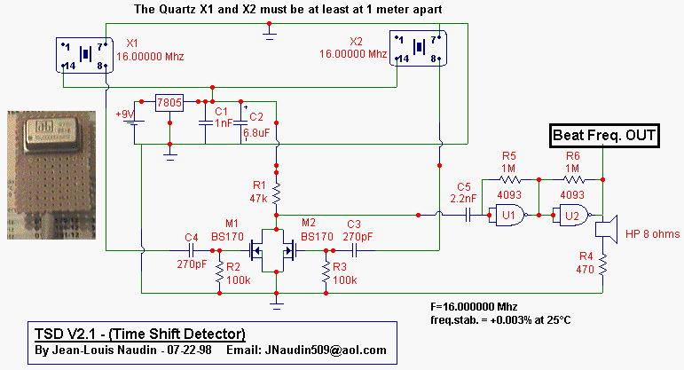
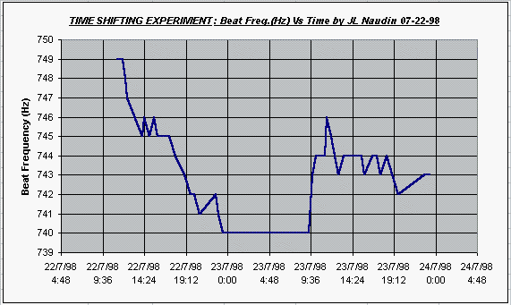
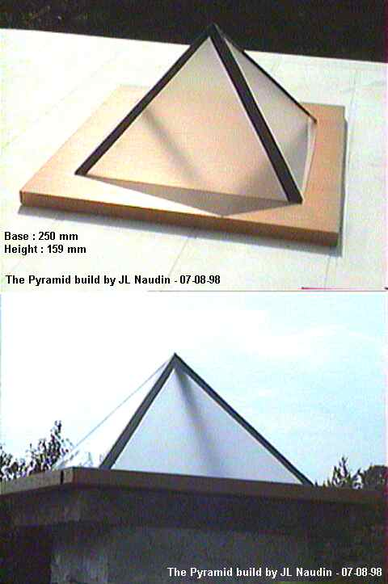
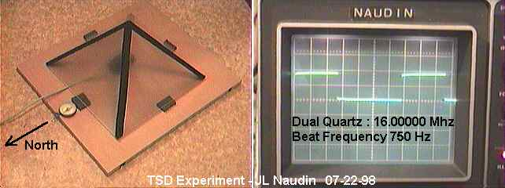

Time Shifting Detector
created on 02-08-99 - JLN Labs - last update on 10-18-99
You will find below an interesting diagram for detecting some local Time-Shifting effects...These effects can be generated by local spacetime curvature from strong torsion fields.
This circuit uses two TCXO (Thermal
Compensated Xtal Oscillator ). The frequency is very precise 16.00000
Mhz +.003% at 25°C. These quartz oscillator are sold in small
metal box ( 20x12mm ) and powered with 5V (45mA).
The mixer are composed of two BS170 MosFet N channel transistor
and the beat frequency is in the audio range and out on a HP.
This TSD V2.1 works very well and the beat frequency is very
stable. The two TCXO must be at least 2 meters apart and the main
circuit placed in the middle ( coaxial cables must be used ).

You can see on the left, a small picture of a TCXO box. The 16 Mhz signal is mixed by the two MosFet BS170 and the beat frequency tone (about 750 Hz) can be heard through the HP.

A digital frequency meter must be used for recording the datas. I hope this help you to find Time Shifting effect....


If you have any suggestions or comments, send me your Feedback
 Email : JNaudin509@aol.com
Email : JNaudin509@aol.com
Return to the B-Field Torsion page